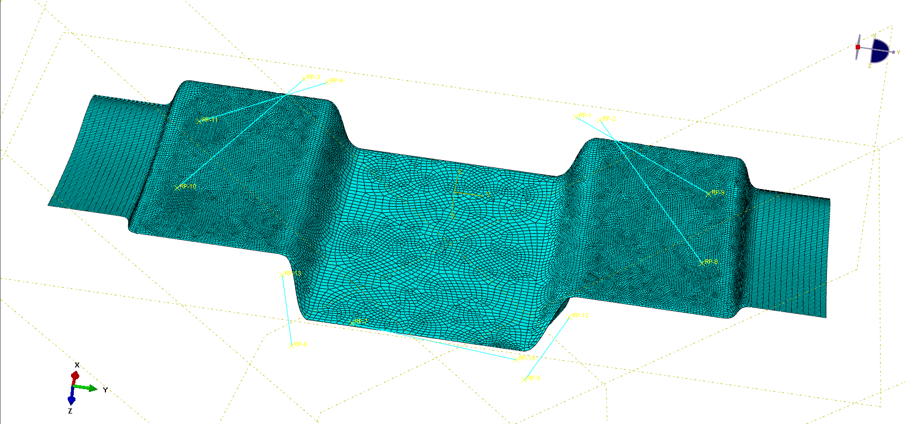
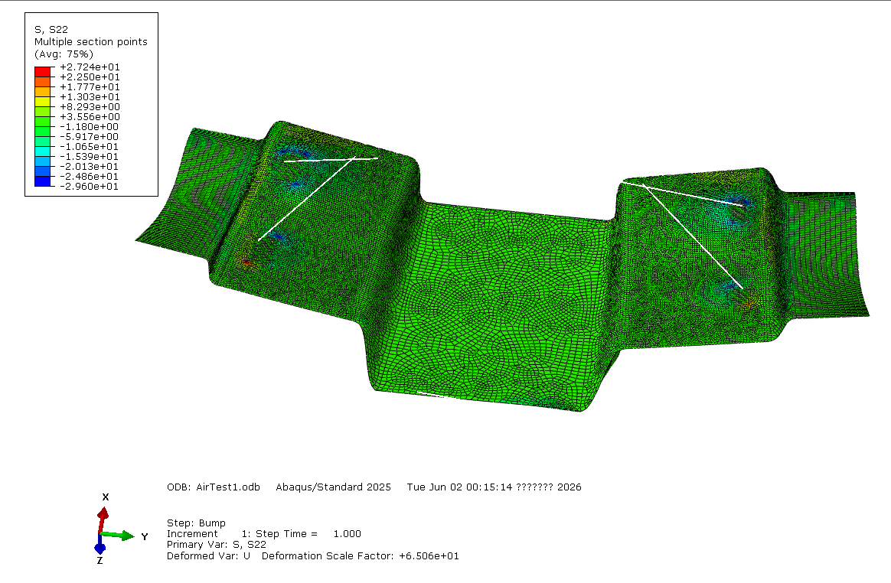
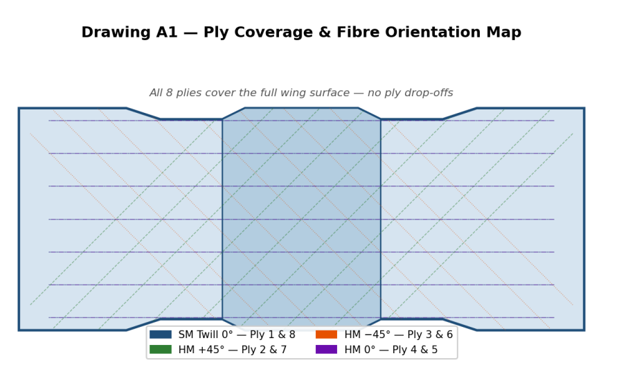

FEA and composite structures
Composite Formula SAE Front Wing Structural Analysis
A composite laminate and Abaqus shell FEA project for a Formula SAE front wing main element, balancing stiffness, strength and mass under aerodynamic, cornering and bump load cases.
54,998Final shell elements
74%Peak stress utilisation under governing case
77%Estimated mass reduction from initial layup
Engineering Capability Shown
- Converted aerodynamic, cornering and bump scenarios into Abaqus load cases for a composite front-wing structure.
- Built an S4R shell-element laminate model with local refinement around attachment regions where stress concentration mattered.
- Checked ply-level stresses against fatigue and ultimate allowables rather than only reading global displacement contours.
- Iterated from an over-designed layup to a lighter quasi-isotropic laminate while retaining strength and stiffness margin.
Selected Results



